往東走到岐阜：犬山城、多治見與大垣
這一週的旅行，除了探索長濱一帶（寫在另一篇〈琵琶湖東側：長濱、彥根與近江八幡〉），還往東邊去了愛知和岐阜三天（犬山城在愛知縣，但離岐阜很近，所以一起去了）。Airbnb 找的住所距離犬山城步行 30 分鐘，是一棟兩層樓的一戶建，跟主人住在一起但其實不太會碰到。房間非常寬敞舒適，每天還有超豐盛的早餐，其中還有主人自己種的馬鈴薯做的沙拉，非常幸福！
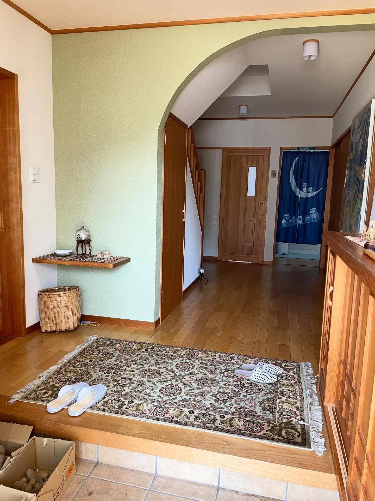
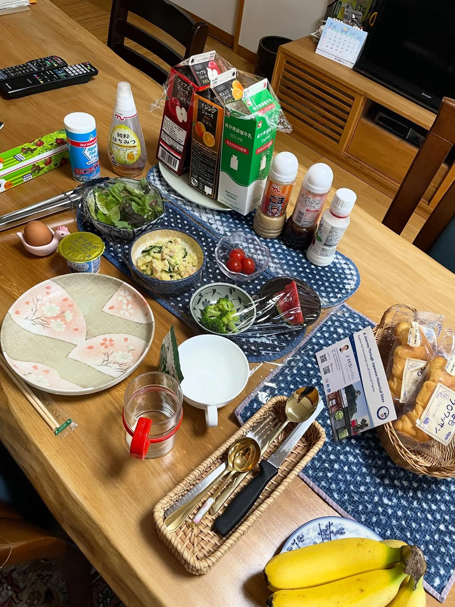
犬山城（7/28）：不可能一週內蒐集到第二座國寶城吧！
犬山城跟彥根城一樣小小的，城內有超陡樓梯是現存天守的標配，讓敵人入侵時很難往上爬（跟台灣鐵窗是同一個概念⋯）。這裡最讚的是天守可以走出外廊，僅有低矮的欄杆，懼高的人可能會怕，但我覺得視野的開闊感令人興奮，跟過往隔著窗眺望的經驗大大不同，而且遊客很少，很適合悠閒地逗留吹風也不怕礙著別人。
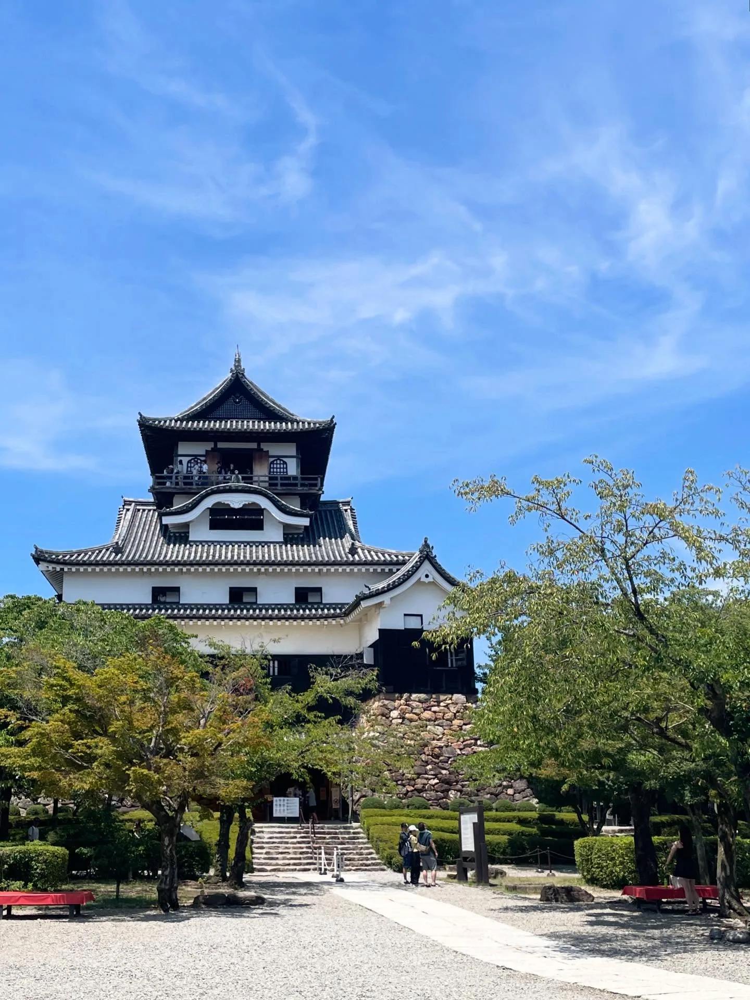
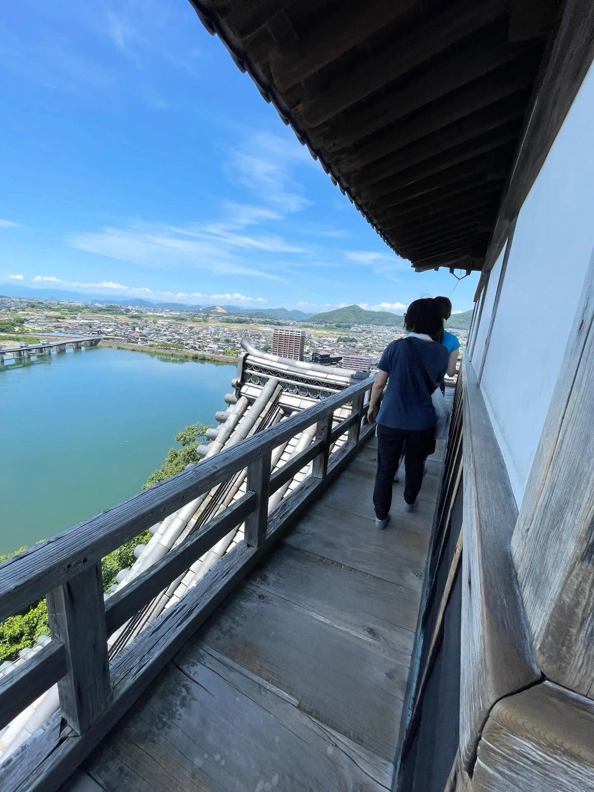
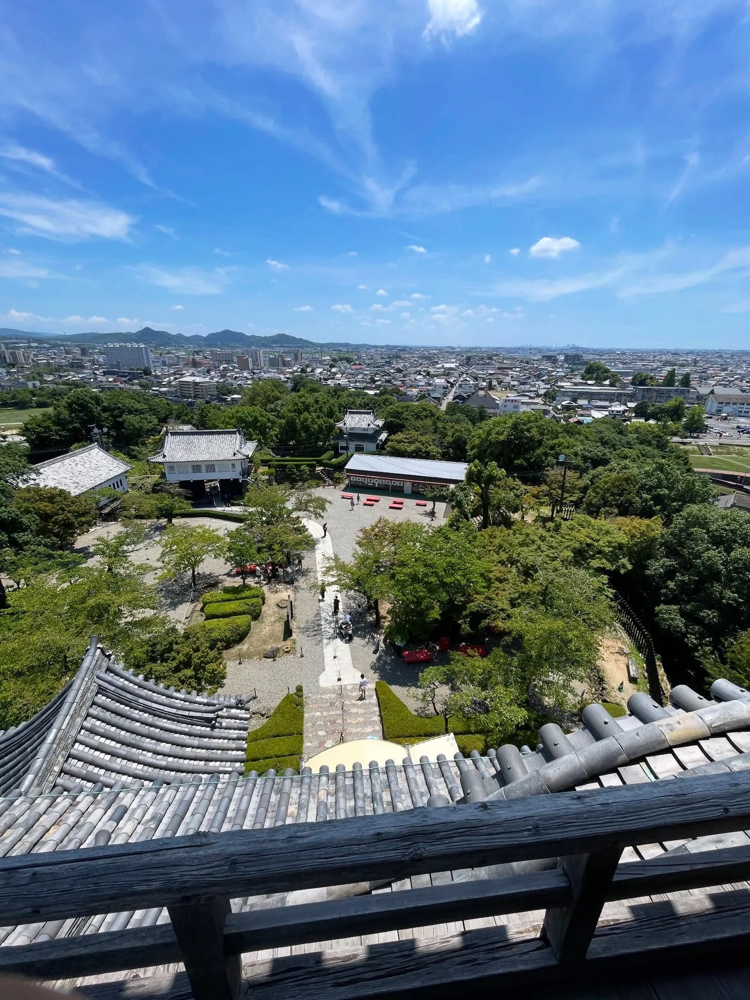
平日的犬山城遇到的遊客約 50 人，只有約 20% 的店家有開張（可能是因為週一）。後來 9 月初的週日又來一次快閃犬山，人潮就有 200 人、80% 店家開張了。
推薦城下町周遊券（1,200 日圓）買好買滿，可逛場館包含：
城とまちミュージアム（文化史料館本館）：館藏豐富、介紹完整的那種，可以透過立體模型地圖認識城下町的相關規劃與建設、產業，與城堡的相對位置等等，而且犬山城下町也是少數仍保留原貌的城鎮之一。（這種保留風貌的城下町，首推高山市沒有之一！雖然城堡整個消失了～）
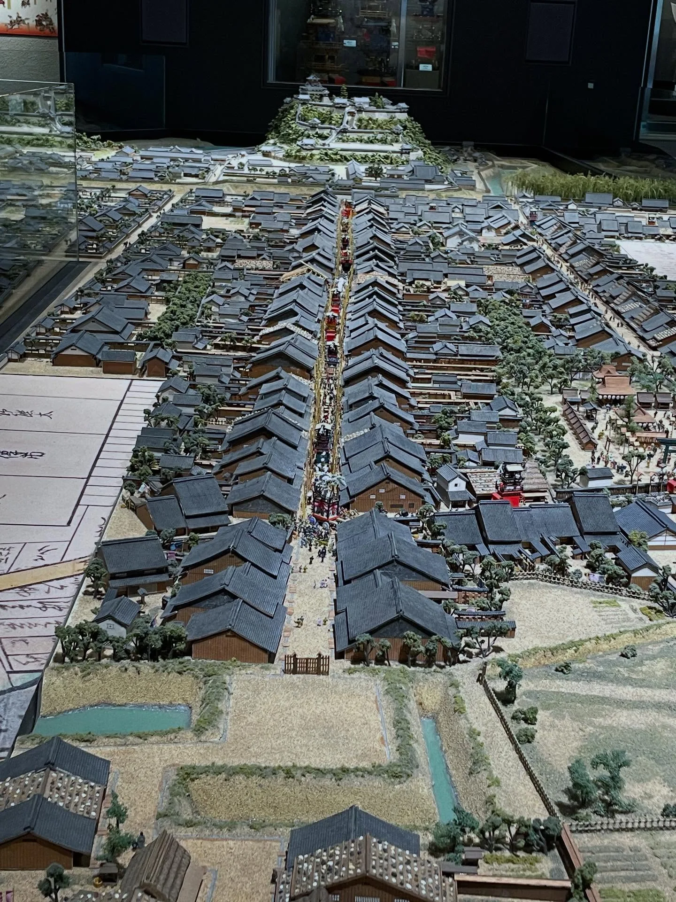
機關博物館（IMASEN 犬山からくりミュージアム）：無論大小的機關人偶都稱作「からくり」。下午 1 點 45 分抵達剛好看到國中生在練習操作大型機關人偶（祭典山車上會出現的那種），2 點則有館員介紹端茶人偶的原理定時解說，運氣非常好能直接看到精巧的原理和操作過程。
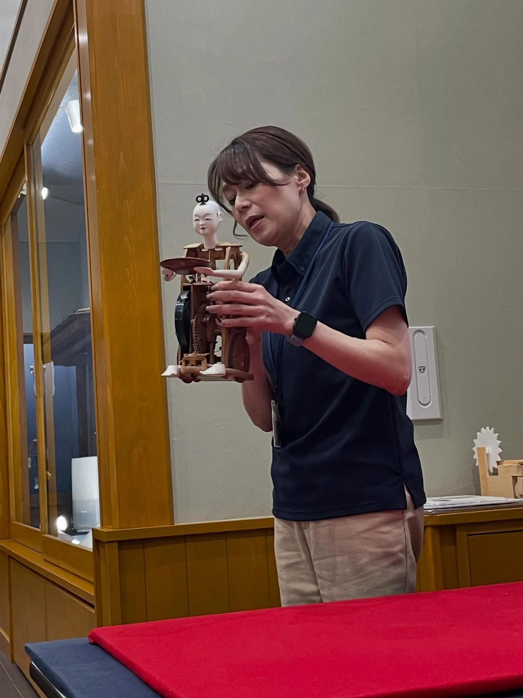
どんでん館：重點在於可以看到兩層樓高的華美山車，搭配祭典的活動音效，無法親臨祭典，至少感受一下其壯觀和祭典的熱鬧氣氛。
備忘
犬山城 09:00–16:30
展館都是 09:00–17:00
多治見（7/29）：美濃燒的主要產地不在美濃唷
多治見市是美濃燒主要產地之一，不是高雄的美濃區，也不是岐阜的美濃市。動畫〈燒窯的話也要馬克杯（やくならマグカップも）〉就是以這個城鎮為舞台，因此走在街上到處看得到相關元素。
因為出發得晚，沒去還需要轉乘公車的虎溪山永保寺，也沒去現代陶藝博物館（Ceramic Park MINO）。這一趟只去本町織部街（本町オリベストリート）走一走，這天是週二，遊客數低於 10 人吧…完全沒看到啊～～
「陶都創造館」是街上地標型（？）的複合式空間，也有一點地方社區中心的感覺。一樓有適合與人逛逛的各種陶器、伴手禮銷售，三樓有地方歷史介紹的小展廳、現代藝術展覽，還有一個開放式教室，有許多小朋友在上課，媽媽們站在走廊上看（？）；街上營業中的陶器專賣店大概 5～10 間，不算逛得很過癮，但風格類型多元，也不至於不滿足，主要可能是太熱跟太孤單了點 QQ
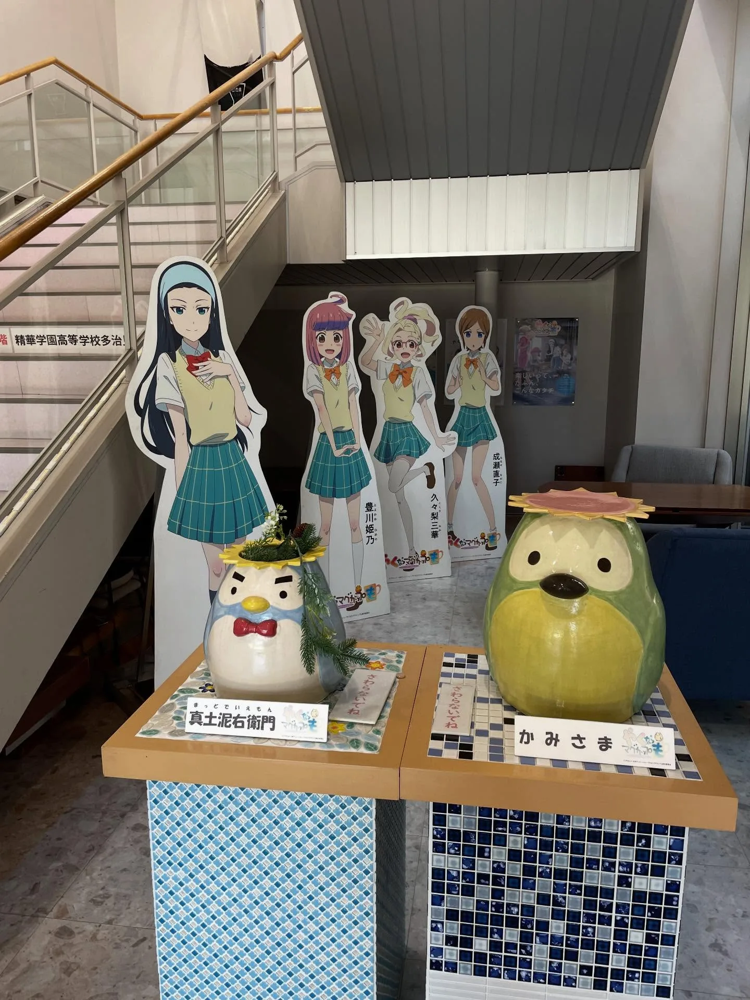
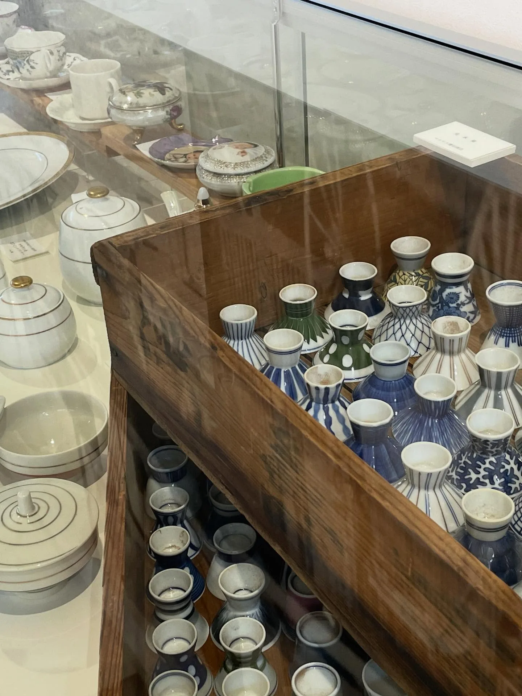
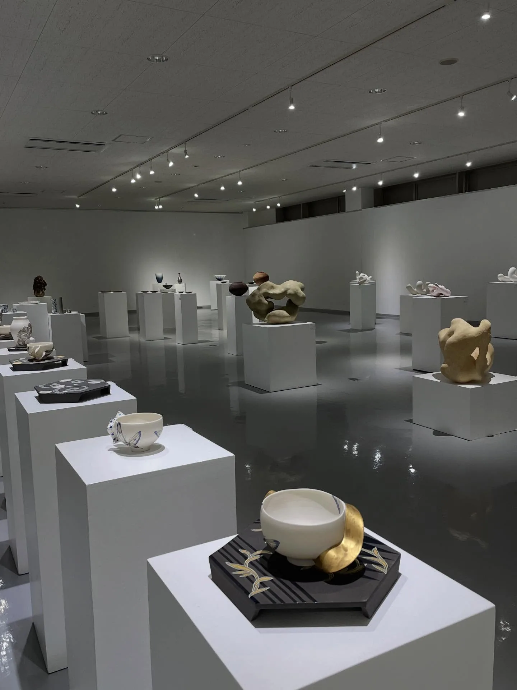
來到陶燒產地，必須買點才說得過去吧！考量得再揹著行囊流浪好一陣子，最後只買了一個小小的織部（Oribe）豆皿；另外看到陶製的磨泥器非常心動，猶豫再三最終雖然沒有出手，但 11 月時在姬路的全國陶器市集看到時心動依舊，立刻買了 XD
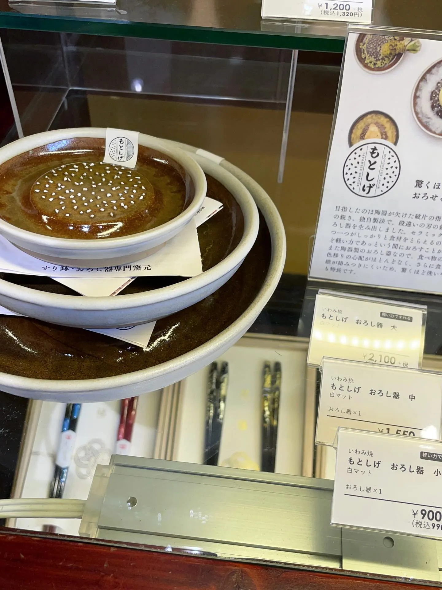
從車站前往本町織部街的路上，有一間風格獨具特色的書店「ひらく本屋 東文堂本店」，我是被空間正中央的氣派樓梯吸引過去。書店不只賣書，也賣選物，有咖啡廳，還有可供租借的共享辦公及活動空間（居然有餐廚設施！）。查了才知道書店已經創辦 126 年，而目前這個空間曾是鐘錶珠寶店，二樓馬賽克風格的書架是居民的共同創作……小鎮能有這麼一間書店，我覺得是很幸福的事。
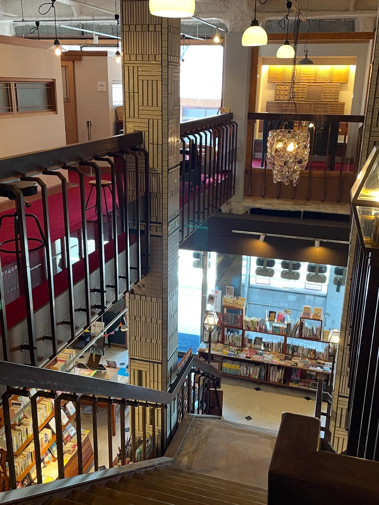
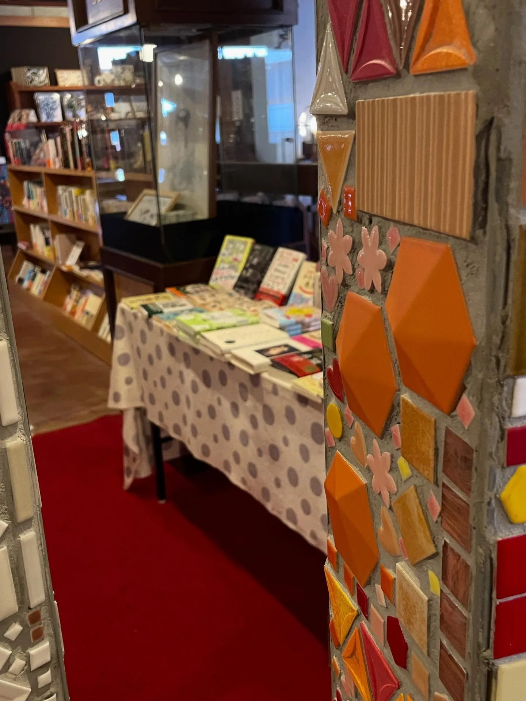
而最甜美的記憶，是「菓匠庵」的葛根冰棒，熱到快昏頭的時候，在菓子店內坐一會兒品嚐，吃起來像是冷凍的果凍，不會立刻在嘴裡化成液體，意外地消暑。
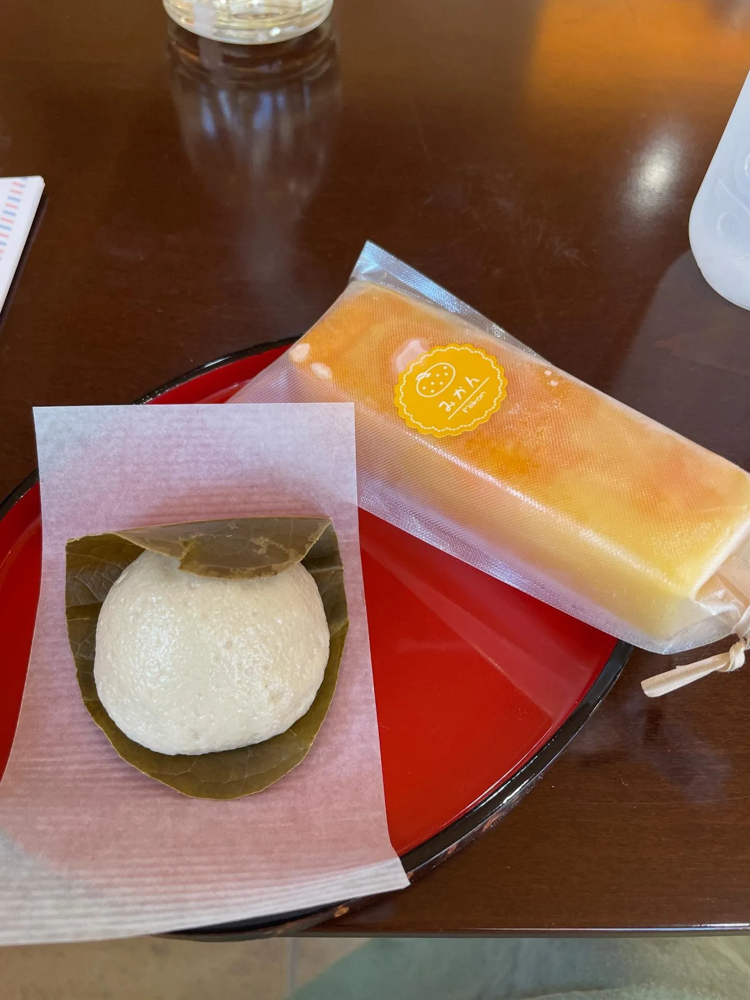
還有在日本兜兜晃晃的數個月間，在車站遊客中心看到最美、最喜歡的宣傳 DM，多治見的「FOR YOU MAP」仍然是不可動搖的第一名。（東西不在手邊，附的照片是官方的）
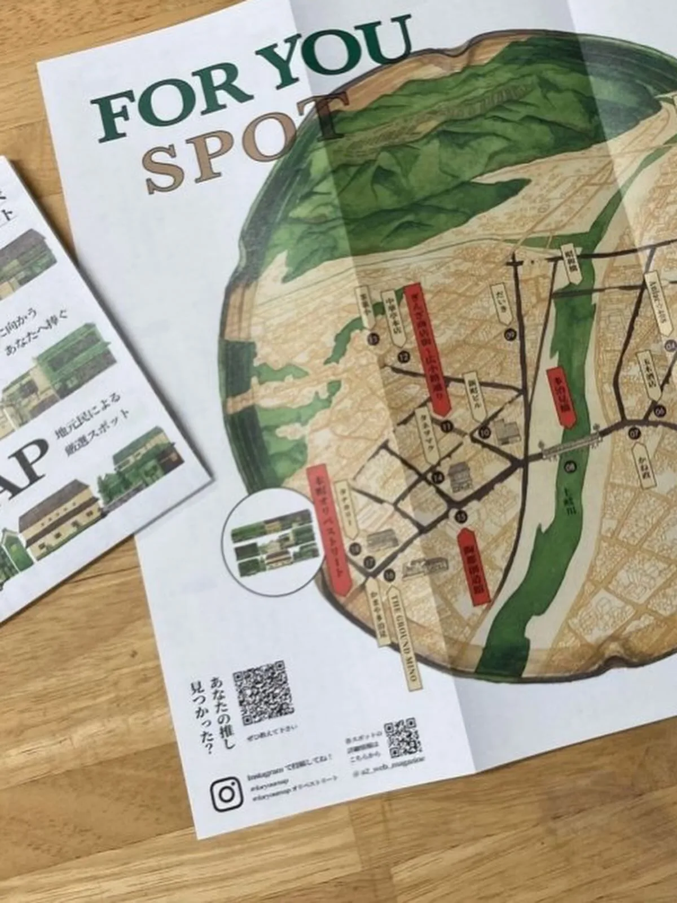
好平凡的午後，好熱好孤單的記憶，卻覺得有點想再去一次，好奇怪！
備忘
- ひらく本屋 東文堂本店：10:00–21:00，週三公休。多治見車站步行 5 分鐘。
- 菓匠庵：09:00–17:30，週三公休。甜點應該是 200–300 日圓？
- ヤマ松加藤松治郎商店：10:00–17:00。在這裡以約 1,200 日圓入手了豆皿。
大垣（7/30）：除了路邊有湧水可以喝，沒有留下什麼印象…
真是抱歉這麼失禮的下標！因為想在長濱及岐阜之間再找一個城市停留，所以來到大垣。
選擇來這裡，一部分是在其他地方遇過幾次俳句詩人「松尾芭蕉」的各種石碑、雕像等，而大垣是芭蕉先生的遊記《奧之細道》（奥の細道）的終點站；其次是因為大垣地下水資源豐富，自然湧水點多，而我著迷於到處喝水，這裡古時大垣城被運河環繞，甚至有「水之都」的美名，水肯定特別厲害的吧！
大約上午 10 點抵達車站、寄好行李後，徒步走了 30 分鐘（含繞路），途經大垣城，前往「奧之細道終點紀念館」。或許是熱昏頭了，路過城堡覺得沒感覺所以沒進去，在紀念館一樓翻翻書覺得沒感覺（又），所以也沒有買票逛展。
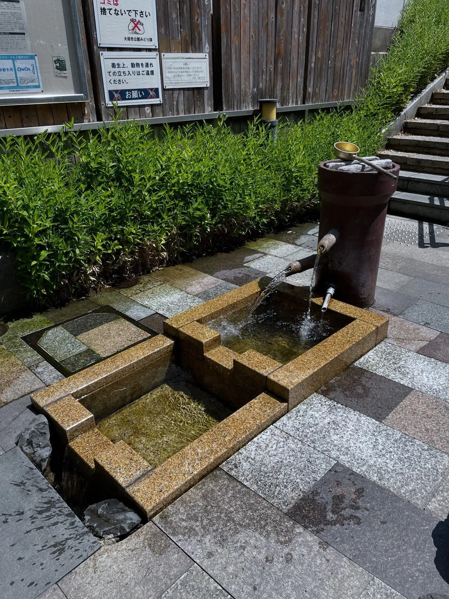
最後在太陽底下辛苦地走回到車站，等紅綠燈時還被阿婆搭話「今天很熱齁～」，路過湧水點裝了水、喝了兩口（生水是不建議直飲的，自己斟酌囉 ^ ^），在站前氣派的菓子店吃了在地名物「水饅頭」，我沒有特別愛好所以不評論，但點心冰涼、店內冷氣很強，離開前甚至發抖了一下，消暑是絕對有的。
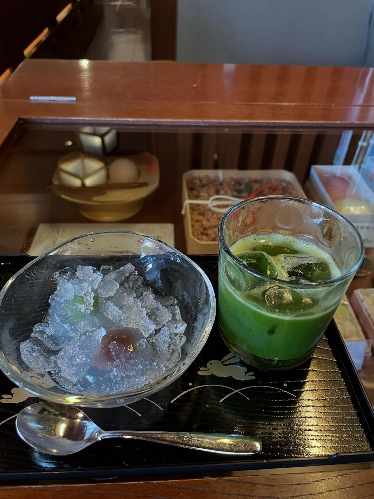
抱歉了大垣，或許是天氣真的太太太熱了，我真的沒感覺啊～～
備忘
- 大垣城：關原之戰時作為石田三成西軍總指揮部，曾被指定為國寶但於二戰炸毀，後以鋼筋混凝土重建。位於大垣公園內，為著名的賞櫻勝地。09:00–17:00，週二休；入城費 200 日圓。
- 木盆舟（たらい舟）：春天期間限定，可以在城裡的運河搭乘木製澡盆，沿途欣賞櫻花或綠意。
- 奥の細道むすびの地記念館：09:00–17:00；入館費 300 日圓，與大垣城有套票可以買。
- 金蝶園総本家 大垣駅前本店：08:00–18:00。販售多種和菓子，約 300–600 日圓之間。可內用。
延伸閱讀：〈琵琶湖東側：長濱、彥根與近江八幡〉
關鍵字愛知犬山犬山城城下町周遊券岐阜多治見美濃燒大垣奧之細道水饅頭
留言
電子郵件不會公開，只用來辨識留言者。第一次留言會先經過審核，之後同一個電子郵件的留言會直接顯示。本留言區以 Cloudflare Turnstile 防止垃圾留言。